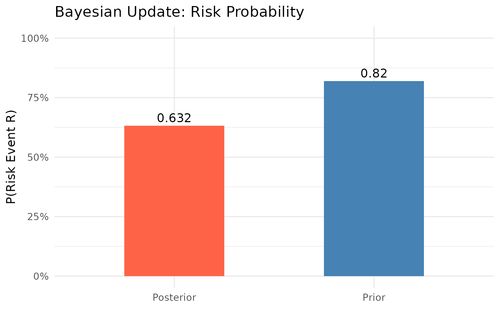
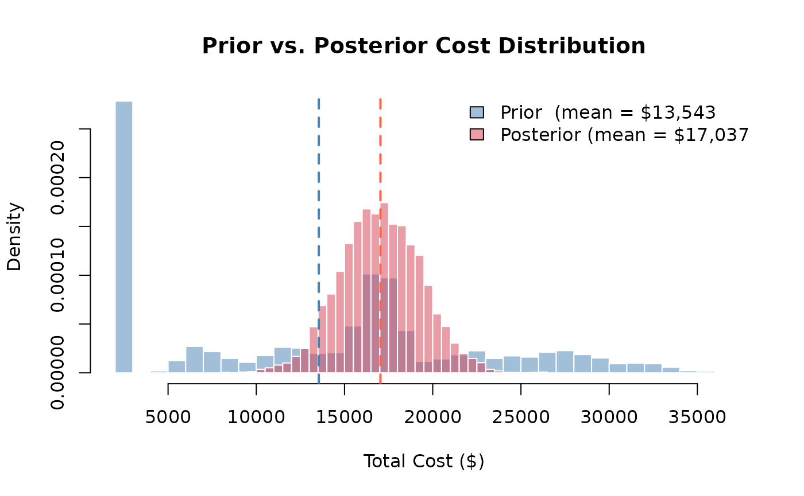

Introduction
Bayesian inference provides a principled framework for updating beliefs as new evidence arrives. In project risk management, this means starting with prior estimates of risk probability (based on historical data or expert judgment), then refining those estimates as on-site observations accumulate.
Bayes’ theorem states:
The PRA package provides four Bayesian functions organized into two stages:
| Stage | Function | Purpose |
|---|---|---|
| Prior | risk_prob() |
Compute risk probability from root causes (no observations yet) |
| Prior | cost_pdf() |
Sample prior cost distribution based on risk probabilities |
| Posterior | risk_post_prob() |
Update risk probability after observing cause status |
| Posterior | cost_post_pdf() |
Sample posterior cost distribution based on observed risks |
Step 1: Prior Risk Probability
Before any observations are made, risk_prob() computes
the probability of a risk event R occurring given two potential root
causes. For each cause, we supply:
-
cause_probs— prior probability that the cause is present -
risks_given_causes— P(R | cause present) -
risks_given_not_causes— P(R | cause absent)
prior_risk <- risk_prob(cause_probs, risks_given_causes, risks_given_not_causes)
cat("Prior probability of risk event R:", round(prior_risk, 3), "\n")Prior probability of risk event R: 0.82
Step 2: Prior Cost Distribution
Given the prior risk probabilities, cost_pdf() samples
the cost distribution before any field observations. Three independent
risk events can each contribute cost if they occur.
risk_probs <- c(0.3, 0.5, 0.2)
means_given_risks <- c(10000, 15000, 5000)
sds_given_risks <- c(2000, 1000, 1000)
base_cost <- 2000
prior_samples <- cost_pdf(
num_sims = 5000,
risk_probs = risk_probs,
means_given_risks = means_given_risks,
sds_given_risks = sds_given_risks,
base_cost = base_cost
)We will compare this to the posterior distribution in Step 4.
Step 3: Posterior Risk Probability (Bayesian Update)
After inspecting the project site, we observe that Cause 1 is present
(= 1). Cause 2 has not yet been assessed (= NA).
risk_post_prob() updates the risk probability using only
the available evidence — NA causes are treated as unobserved and do not
contribute to the update.
# C1 observed as present; C2 not yet assessed
observed_causes <- c(1, NA)
posterior_risk <- risk_post_prob(
cause_probs, risks_given_causes,
risks_given_not_causes, observed_causes
)
cat("Posterior probability of risk event R:", round(posterior_risk, 3), "\n")Posterior probability of risk event R: 0.632
Observing Cause 1 (which has a strong link to R) raises the risk probability substantially. The NA for Cause 2 is simply ignored — only confirmed observations drive the update.
Prior vs. Posterior Probability
prob_data <- data.frame(
Stage = c("Prior", "Posterior"),
Probability = c(prior_risk, posterior_risk)
)
p <- ggplot2::ggplot(prob_data, ggplot2::aes(x = Stage, y = Probability, fill = Stage)) +
ggplot2::geom_col(width = 0.5, show.legend = FALSE) +
ggplot2::geom_text(ggplot2::aes(label = round(Probability, 3)),
vjust = -0.4, size = 4.5
) +
ggplot2::scale_fill_manual(values = c("Prior" = "steelblue", "Posterior" = "tomato")) +
ggplot2::scale_y_continuous(limits = c(0, 1), labels = scales::percent) +
ggplot2::labs(
title = "Bayesian Update: Risk Probability",
x = NULL,
y = "P(Risk Event R)"
) +
ggplot2::theme_minimal(base_size = 13)
print(p)
The bar chart makes the Bayesian update tangible: observing Cause 1 nearly doubles the estimated probability of the risk event.
Step 4: Posterior Cost Distribution
Now that we know Cause 1 is present (Risk 1 occurs), and one risk
remains unobserved (Risk 2 = NA), cost_post_pdf() samples
the posterior cost distribution. Observed risks that occurred (= 1) add
their cost; unobserved risks (= NA) are excluded from the
simulation.
observed_risks <- c(1, NA, 1) # Risk 1 and 3 confirmed; Risk 2 not yet assessed
posterior_samples <- cost_post_pdf(
num_sims = 5000,
observed_risks = observed_risks,
means_given_risks = means_given_risks,
sds_given_risks = sds_given_risks,
base_cost = base_cost
)Prior vs. Posterior Cost Distribution
Plotting both distributions on the same axes shows how the evidence shifts the cost estimate:
xlim_range <- range(c(prior_samples, posterior_samples))
# Prior cost histogram
hist(prior_samples,
breaks = 40, freq = FALSE,
col = rgb(0.27, 0.51, 0.71, 0.5), # steelblue, semi-transparent
border = "white",
xlim = xlim_range,
main = "Prior vs. Posterior Cost Distribution",
xlab = "Total Cost ($)",
ylab = "Density"
)
# Posterior cost histogram (overlaid)
hist(posterior_samples,
breaks = 40, freq = FALSE,
col = rgb(0.84, 0.24, 0.31, 0.5), # tomato, semi-transparent
border = "white",
add = TRUE
)
abline(v = mean(prior_samples), col = "steelblue", lty = 2, lwd = 2)
abline(v = mean(posterior_samples), col = "tomato", lty = 2, lwd = 2)
legend("topright",
legend = c(
paste0("Prior (mean = $", format(round(mean(prior_samples)), big.mark = ",")),
paste0("Posterior (mean = $", format(round(mean(posterior_samples)), big.mark = ","))
),
fill = c(rgb(0.27, 0.51, 0.71, 0.5), rgb(0.84, 0.24, 0.31, 0.5)),
bty = "n"
)
Interpretation: The posterior distribution is narrower and shifted, observing which risks materialized eliminates uncertainty about some cost components. The remaining spread reflects uncertainty from unobserved risks and cost variability in the confirmed risks.
Summary
The Bayesian workflow in PRA follows a natural before-and-after structure:
-
Before observations — use
risk_prob()andcost_pdf()to characterize the risk landscape. -
As evidence arrives — use
risk_post_prob()andcost_post_pdf()to update estimates. -
NA values in
observed_causesandobserved_risksrepresent causes/risks that have not yet been assessed; they are correctly excluded from the Bayesian update.
This approach is particularly powerful in phased projects where information about risk drivers becomes available progressively, allowing cost forecasts to be refined at each stage.